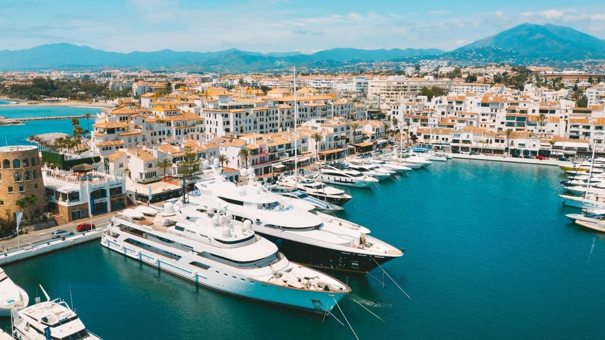
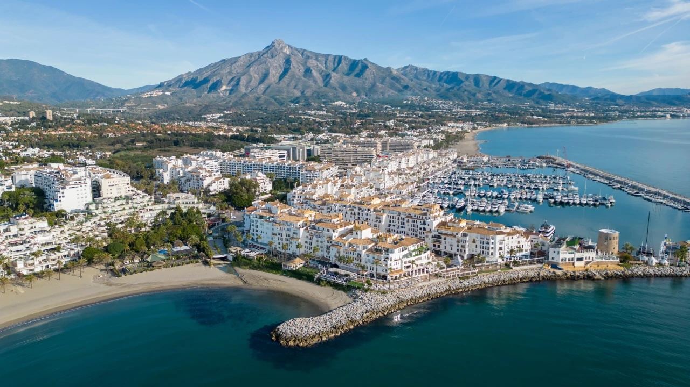
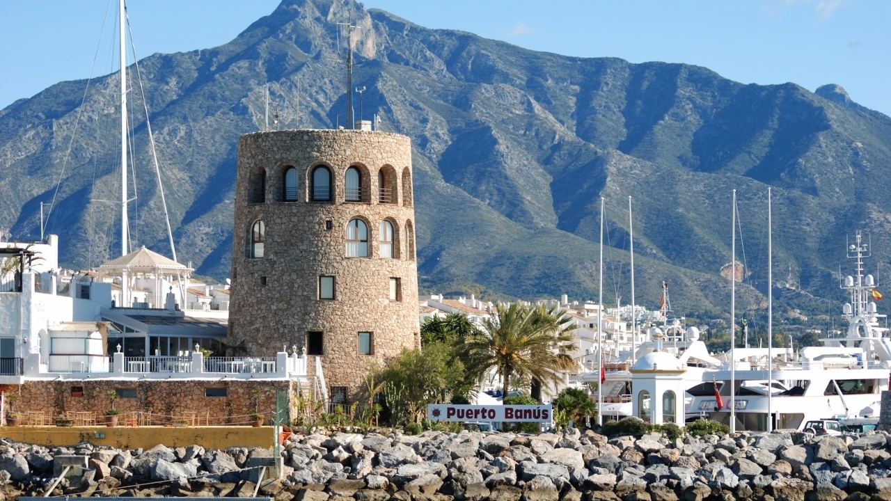
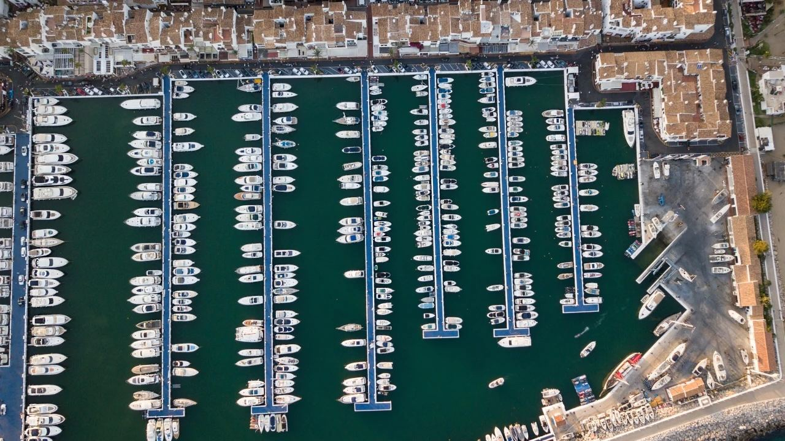
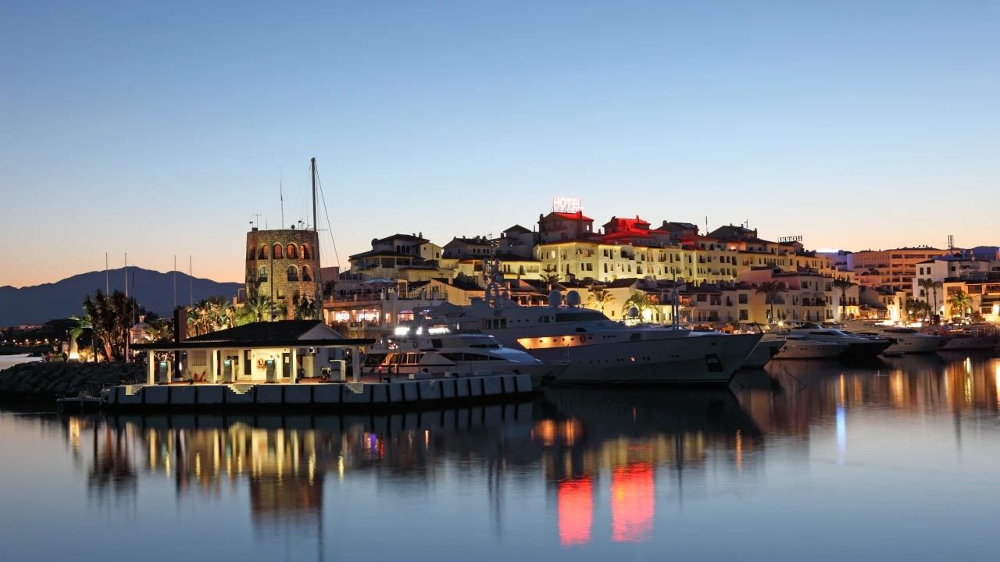
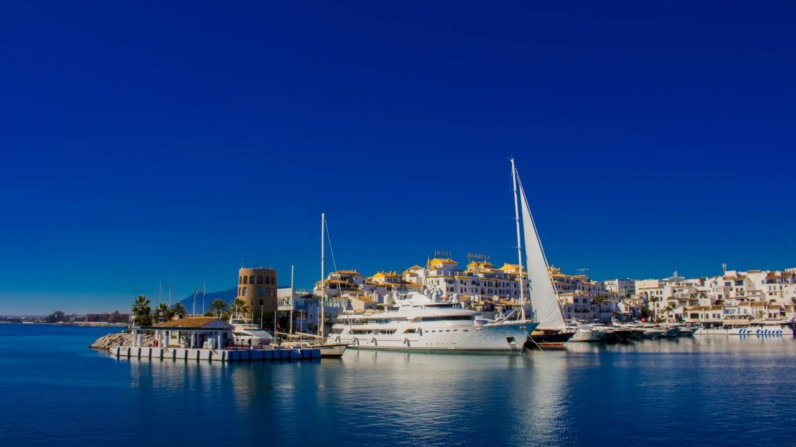

Places · Costa del Sol
Puerto Banús in Marbella: Yachts, Lifestyle and Living Nearby
 By Lucyna Gacek · · updated · 3 min read
By Lucyna Gacek · · updated · 3 min read

In short: Puerto Banús is a marina about 6 km west of Marbella's old town, opened in 1970 by developer José Banús. It has more than 900 berths for boats up to around 50 m, and the harbour front is lined with luxury boutiques, restaurants and bars. Beyond yachts, you can book boat trips, dolphin watching, jet skis and water sports. Behind the port, Nueva Andalucía with its golf courses is one of the most sought-after residential areas of the Costa del Sol.
Few places on the Spanish coast are as famous as Puerto Banús. The white Andalusian-style buildings, the superyachts on the quay and the sports cars on the waterfront have made it a symbol of the Costa del Sol. But behind the image is a real neighbourhood with beaches, schools, golf courses and homes for every budget above the average.
Here is what you should know, whether you are visiting for a day or thinking about living nearby.
Where is Puerto Banús?

Puerto Banús lies in the municipality of Marbella, about 6 km west of the old town and around 50 minutes by car from Málaga airport along the A-7 or the AP-7 toll road. The port sits between two beaches, with La Concha mountain behind and the valley of Nueva Andalucía climbing inland. San Pedro de Alcántara is a few minutes west, and Benahavís about 15 minutes inland.
See our properties for sale in Marbella.
A short history

The port was built by José Banús, a Spanish developer who wanted a luxury marina to rival Saint-Tropez. Instead of tower blocks, the project was designed as an Andalusian fishing village of low white houses, with architect Noldi Schreck. The opening in 1970 brought famous guests to Marbella, and the port quickly became a meeting place for the international jet set. Today it is one of the best-known marinas in the Mediterranean.
Yachts and life on the water

The marina has more than 900 berths, from small motorboats to superyachts of around 50 metres on the main quay. Berths are rented and also sold as long-term concessions. For visitors and residents, the port offers:
- yacht and boat charter, with or without a skipper,
- sea trips and dolphin watching in the Strait direction,
- jet skis, parasailing, paddle boarding and kayaks from the nearby beaches,
- a fuel station, boatyard services and 24-hour security.
Through the year the port also hosts sailing regattas, car and fashion events and summer parties.
Shopping, restaurants and nightlife

The front line of the marina is one of the most exclusive shopping streets in Spain, with international luxury fashion and jewellery brands. Just behind it are a large department store and more everyday shops. Restaurants range from fish and tapas to international fine dining, many with views of the boats. In the evening the bars and clubs make Puerto Banús one of the liveliest nightlife spots on the Costa del Sol, especially in summer.
Tip: in July and August, park in one of the underground car parks and come early in the evening; the waterfront is busiest after 10 pm.
Living near Puerto Banús

Most people who live near the port choose one of three areas:
- Front line and the beach side – apartments and penthouses with sea and marina views, walkable to everything. Lively in summer.
- Nueva Andalucía – the "Golf Valley" behind the port, with courses such as Los Naranjos, Las Brisas and Aloha, villas and gated communities, and several international schools nearby.
- San Pedro de Alcántara and Benahavís – a more local town feel or quiet hills, often with more space for the money.
Prices around Puerto Banús are among the highest on the coast, and the best homes rarely stay on the market for long. Compare nearby areas such as Estepona, which is about 20 minutes west.
Frequently asked questions
How far is Puerto Banús from Marbella?
About 6 km west of Marbella's old town, around 10–15 minutes by car. It is part of the municipality of Marbella.
How far is Puerto Banús from Málaga airport?
About 60 km, around 45–55 minutes by car, depending on traffic and whether you take the AP-7 toll road.
When did Puerto Banús open?
In 1970. It was built by developer José Banús and designed as an Andalusian village.
Is Puerto Banús a good place to live?
It suits people who want a lively, international lifestyle with everything within walking distance. If you prefer quiet, Nueva Andalucía or Benahavís, a few minutes away, are popular alternatives.
Find your home on the Costa del Sol
Whether you want a penthouse overlooking the marina or a villa in the hills of Nueva Andalucía, we can help you compare areas and new developments around Puerto Banús. Get in touch and tell us how you would like to live.
Sources: Puerto José Banús – official marina site · Marbella Tourist Office